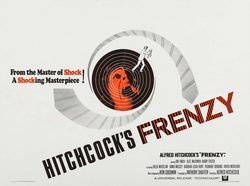

Frenzy

Starring: Jon Finch, Alec McCowen, Barry Foster
Director: Alfred Hitchcock
Writer: Anthony Shaffer
Producer: Alfred Hitchcock
Frenzy is a 1972 British neo-noir thriller film directed and produced by Alfred Hitchcock. It is the penultimate feature film of his extensive career. The screenplay by Anthony Shaffer is based on the 1966 novel Goodbye Piccadilly, Farewell Leicester Square by Arthur La Bern.
Trivia
- Selected for the National Board of Review: Top Ten Films.
- Based on Goodbye Piccadilly, Farewell Leicester Square (1966 novel by Arthur La Bern).
- After a pair of unsuccessful films depicting political intrigue and espionage, Hitchcock returned to the murder genre with this film.
- The narrative makes use of the familiar Hitchcock theme of an innocent man overwhelmed by circumstantial evidence and wrongly assumed to be guilty.
- Hitchcock announced the project in March 1968.
Filming Locations
- London
- Pinewood Studios
- Hitchcock shot Frenzy in London after many years making films in the United States.
- The film opens with a sweeping shot along the Thames to Tower Bridge; and while the interior scenes were filmed at Pinewood Studios, much of the location filming was done in and around Covent Garden and was a homage to the London of Hitchcock's childhood.
Previous Showings
2 Runs • 2 Festivals
All runs on record (2):
- April 17 - 19, 2000Alfred Hitchcock Film Festivalw/ Family Plot
- May 30 - 31, 2026Hitchcock, The Master of Suspense 2026w/ Psycho